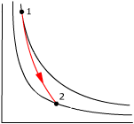
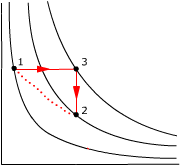
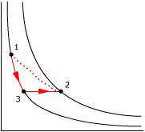

1a)
¿Cuál es la variación de entropía cuando se
congelan 5 g de agua?
b) ¿Cuál
es la variación de entropía cuando se funden 5 g de hielo?
Hielo cf = 80 cal/g
Durante la congelación la temperatura del agua permanece constante (273 K)
$$\begin{aligned}&\Delta S=\frac{Q}{T}=\frac{m\,c_c}{T}\\[6pt] &\Delta S=\frac{5\ \mathrm{g}\,(-80\ \mathrm{cal/g})}{273\ \mathrm{K}}=\frac{-400\cdot1/0{,}24\ \mathrm{J}}{273\ \mathrm{K}}=-6{,}1\ \mathrm{\frac{J}{K}}\end{aligned}$$
La entropía del agua ha disminuído
Las 400 calorías que pierde el agua al congelarse las toma el entorno que deberá estar a menos de 273 K (Si no fuera así no se congelaría el agua). La variación de entropía del entorno será:
$$\Delta S'=\frac{+400\cdot1/0{,}24\ \mathrm{J}}{T}>6{,}1\ \mathrm{\frac{J}{K}}$$
La entropía del entorno ha aumentado más de lo que ha disminuído la entropia del agua.
Total: la entropía del Universo ha aumentado
Durante la fusión la temperatura del hielo permanece constante (273 K)
$$\begin{aligned}&\Delta S=\frac{Q}{T}=\frac{m\,c_f}{T}\\[6pt] &\Delta S=\frac{5\ \mathrm{g}\;80\ \mathrm{cal/g}}{273\ \mathrm{K}}=\frac{400\cdot1/0{,}24\ \mathrm{J}}{273\ \mathrm{K}}=6{,}1\ \mathrm{\frac{J}{K}}\end{aligned}$$
La entropía del hielo ha aumentado
Las 400 calorías que gana el hielo al fundirse las toma del entorno que deberá estar a más de 273 K (Si no fuera así no se fundiría el hielo). La variación de entropía del entorno será:
$$\Delta S'=\frac{-400\cdot1/0{,}24\ \mathrm{J}}{T}<-6{,}1\ \mathrm{\frac{J}{K}}$$
La entropía del entorno ha disminuido menos de lo que ha aumentado la entropia del hielo.
Total: la entropía del Universo ha aumentado
2Determina la variación de entropía de 1 kg de agua que se calienta de 0 a 100 ºC
$$\begin{aligned}&\Delta S=m\,c\ln\frac{T_2}{T_1}\\[6pt] &\Delta S=1000\ \mathrm{g}\;\htmlData{pc-ac=ac0}{\boxed{4{,}17\ \mathrm{\frac{J}{g\,K}}}}\ln\frac{373\ \mathrm{K}}{273\ \mathrm{K}}=1302\ \mathrm{\frac{J}{K}}\end{aligned}$$
3Se mezclan 1 kg de agua a 30 ºC con 2 kg de agua a 90 ºC. Determina la variación de entropía del sistema
Para empezar hay que calcular la temperatura de equilibrio de la mezcla:
$$\begin{aligned}&Q_g+Q_p=0\\[6pt] &m_1\,c\,(t-t_1)+m_2\,c\,(t-t_2)=0\\[6pt] &m_1\,t-m_1\,t_1+m_2\,t-m_2\,t_2=0\;\rightarrow\;t=\frac{m_1\,t_1+m_2\,t_2}{m_1+m_2}\\[6pt] &t=\frac{1\ \mathrm{kg}\;30\ \mathrm{^\circ C}+2\ \mathrm{kg}\;90\ \mathrm{^\circ C}}{1\ \mathrm{kg}+2\ \mathrm{kg}}=70\ \mathrm{^\circ C}\end{aligned}$$
Variación de entropía del agua fría:
$$\begin{aligned}&\Delta S_1=m_1\,c\ln\frac{T}{T_1}\\[6pt] &\Delta S_1=1000\ \mathrm{g}\;1\ \mathrm{\frac{cal}{g\,{}^\circ C}}\ln\frac{343\ \mathrm{K}}{303\ \mathrm{K}}=1000\ \mathrm{g}\;1\ \mathrm{\frac{1/0{,}24\,J}{g\,K}}\ln\frac{343\ \mathrm{K}}{303\ \mathrm{K}}=517\ \mathrm{\frac{J}{K}}\end{aligned}$$
Variación de entropía del agua caliente:
$$\begin{aligned}&\Delta S_2=m_2\,c\ln\frac{T}{T_2}\\[6pt] &\Delta S_2=2000\ \mathrm{g}\;1\ \mathrm{\frac{cal}{g\,{}^\circ C}}\ln\frac{343\ \mathrm{K}}{363\ \mathrm{K}}=2000\ \mathrm{g}\;1\ \mathrm{\frac{1/0{,}24\,J}{g\,{}^\circ C}}\ln\frac{343\ \mathrm{K}}{363\ \mathrm{K}}=-473\ \mathrm{\frac{J}{K}}\end{aligned}$$
Variación de entropía del sistema:
ΔS = (517 - 473) J / K = 44 J / K
Si el recipiente que contiene la mezcla está bien aislado el entorno no intercambiará calor con la mezcla y por tanto ΔS' = 0
La variación de entropía del Universo será: 0 + 44 J / K = 44 J / K (Ha aumentado)
4Un bloque de 2.5 kg moviéndose a 3 m/s choca con una pared y se detiene. Suponiendo que la tem-peratura del bloque, pared y alrededores se mantiene en 20 ºC calcula la variación de entropía del bloque, la del entorno y la del Universo
El bloque gana calor a expensas de la energía cinética perdida en el choque:
$$\begin{aligned}&\Delta S=\frac{Q}{T}=\frac{-\Delta E_C}{T}=\frac{-(-m\,v^2/2)}{T}\\[6pt] &\Delta S=\frac{2{,}5\ \mathrm{kg}\,(3\ \mathrm{m/s})^2/2}{293\ \mathrm{K}}=0{,}0384\ \mathrm{\frac{J}{K}}\end{aligned}$$
La entropía del bloque ha aumentado
El entorno no ha cedido calor al bloque, por tanto ΔS' = 0
La variación de entropía del Universo será: 0 + 0.0384 J/K = 0.0384 J/K (Ha aumentado)
5Dos moles de un gas ideal a 400 K se expansionan cuasiestática e isotérmicamente desde 40 l hasta 80 l ¿Cuál es la variación de entropía del gas? ¿Qué se puede decir de la entropía del Universo? ¿Y si el proceso no hubiera sido cuasiestático?
$$\begin{aligned}&\Delta S=n\,R\ln\frac{V_2}{V_1}\\[6pt] &\Delta S=2\ \mathrm{mol}\;0{,}082\,\frac{\htmlData{pc-ac=ac0}{\boxed{101\ \mathrm{J}}}}{\mathrm{mol\,K}}\ln\frac{80\ \mathrm{l}}{40\ \mathrm{l}}=11{,}5\ \mathrm{\frac{J}{K}}\end{aligned}$$
En un proceso cuasiestático se compensan los cocientes: (dQtomado / T) y (dQcedido / T) para sistema y entorno de forma que la variación de entropía del Universo será cero
En un proceso no cuasiestático desparece esta compensación pero predomina siempre el cociente posi-tivo de forma que la variación de entropía del Universo será positiva
6Un sistema que se desplaza del estado A al B absorbe reversiblemente 200 J de calor de un foco a 300 K, cede reversiblemente 100 J a un foco a 200 K y realiza un trabajo de 50 J ¿Cuál es la variación en la energía interna del sistema? ¿Cuál es la variación en la entropía del sistema? ¿Cuál es la variación en la entropía del Universo? ¿Y si el proceso no hubiera sido irreversible?
$$\begin{aligned}&\Delta U=Q-\mathcal{T}\\[6pt] &\Delta U=(200-100)\ \mathrm{J}-50\ \mathrm{J}=50\ \mathrm{J}\end{aligned}$$
La energía interna del sistema ha aumentado (Sube la temperatura)
$$\begin{aligned}&\Delta S=\frac{Q_1}{T_1}+\frac{Q_2}{T_2}\\[6pt] &\Delta S=\frac{200\ \mathrm{J}}{300\ \mathrm{K}}+\frac{(-100\ \mathrm{J})}{200\ \mathrm{K}}=0{,}17\ \mathrm{\frac{J}{K}}\end{aligned}$$
La entropía del sistema ha aumentado, como el proceso es reversible la entropía del entorno habrá disminuido en la misma cantidad y la entropía del Universo no cambiará
Si el proceso fuera irreversible la entropía del entorno disminuiría menos de lo que aumenta la del sitema de forma que la entropía del Universo crecería
7En cada ciclo, una máquina de Carnot reversible extrae 100 J de calor de un foco a 400 K, realiza un trabajo y elimina calor a otro foco a 300 K. Calcula la variación de entropía en el ciclo
Cambio de entropía de la máquina al tomar calor del foco caliente:
$$\Delta S_1=\frac{Q_1}{T_1}=\frac{100\ \mathrm{J}}{400\ \mathrm{K}}=0{,}25\ \mathrm{\frac{J}{K}}$$
Para calcular el cambio de entropía de la máquina al ceder calor al foco frío hay que obtener antes el calor cedido:
$$\eta=\frac{T_1-T_2}{T_1}=\frac{400\ \mathrm{K}-300\ \mathrm{K}}{400\ \mathrm{K}}=0{,}25$$
La máquina convierte en trabajo el 25% del calor que toma y devuelve el 75%, luego el calor cedido al foco frío es: 75 J
$$\Delta S_2=\frac{Q_2}{T_2}=\frac{(-75\ \mathrm{J})}{300\ \mathrm{K}}=-0{,}25\ \mathrm{\frac{J}{K}}$$
La variación de entropía de la máquina en el ciclo es cero
8Un sistema consistente en 2 moles de un gas monoatómico se expande reversiblemente a presión constante hasta triplicar su volumen. Calcula los cambios en la entropía del gas, del entorno y del Universo
$$\begin{aligned}&\Delta S=n\,c_p\ln\frac{T_2}{T_1}\\[6pt] &\Delta S=n\,c_p\ln\htmlData{pc-ac=ac5}{\boxed{\frac{V_2}{V_1}}}=n\,\frac{5}{2}\,R\ln\frac{V_2}{V_1}=2\ \mathrm{mol}\;\frac{5}{2}\;0{,}082\,\frac{\htmlData{pc-ac=ac0}{\boxed{101\ \mathrm{J}}}}{\mathrm{mol\,K}}\ln3=45{,}5\ \mathrm{\frac{J}{K}}\end{aligned}$$
En un proceso reversible el cambio de entropía del sistema es igual y opuesto al cambio de entropía del entorno. El cambio de entropía de Universo será cero
93 moles de gas monoatómico a 10 at y 273 K se expansionan de forma adiabática reversible hasta la presión de 1 at. Calcula el estado final y la variación de entropía del gas
 |
$$\left.\begin{array}{l}P_1\,V_1=n\,R\,T_1\\[6pt] P_2\,V_2=n\,R\,T_2\\[6pt] P_1\,V_1^\gamma=P_2\,V_2^\gamma\end{array}\right\}\;\htmlData{pc-ac=ac0}{\boxed{T_2=T_1\left(\frac{P_1}{P_2}\right)^{1/\gamma-1}}}$$ |
Sustituyendo valores:
$$\begin{aligned}&T_2=273\ \mathrm{K}\left(\frac{10}{1}\right)^{3/5-1}=109\ \mathrm{K}\\[6pt] &V_2=\frac{n\,R\,T_2}{P_2}=\frac{3\ \mathrm{mol}\;0{,}082\ \mathrm{at\,l/mol\,K}\;109\ \mathrm{K}}{1\ \mathrm{at}}=26{,}8\ \mathrm{l}\end{aligned}$$
La variación de entropía es cero porque en una adiabática no se intercambia calor
10Determina la variación de entropía que tiene lugar en la expansión libre de 0.75 moles de gas ideal desde 1.5 l hasta 3 l
$$\Delta S=\int_1^2\frac{dQ}{T}$$
En una expansión libre el gas no intercambia calor,
por tanto el cambio de entropía será cero...
¡Craso error! La formula de la entropía se aplica a un proceso
reversible que vaya del estado inicial al final, como la expansión
libre es irreversible no se le puede aplicar
La transformación reversible que necesitamos es una expansión isoterma desde 1.5 hasta 3 l
$$\begin{aligned}&\Delta S=n\,R\ln\frac{V_2}{V_1}\\[6pt] &\Delta S=0{,}75\ \mathrm{mol}\;0{,}082\,\frac{\htmlData{pc-ac=ac0}{\boxed{101\ \mathrm{J}}}}{\mathrm{mol\,K}}\ln\frac{3\ \mathrm{l}}{1{,}5\ \mathrm{l}}=4{,}30\ \mathrm{\frac{J}{K}}\end{aligned}$$
11Un mol de aire (γ
= 1.4) cuyo estado inicial es P1 = 1.46 at, V1 =
31 l evoluciona irreversiblemente hasta un estado P2 = 3 at,
V2 = 26 l. Calcula la variación de entropía por
dos caminos diferentes:
a) Conectando
los estados inicial y final mediante un proceso isóbaro y uno isocoro
b) Conectando
los estados inicial y final mediante un proceso isotermo y uno isóbaro
|
 |
La línea de puntos representa la transformación irrever-sible (Que no se puede representar en el diagrama P - V) Para calcular cambios de entropía hay que trabajar con transformaciones reversibles |
Cambio de entropía en la transformación 1-3-2:
ΔS = (-5.10 + 14.9) J / K = 9.8 J/ K
|
 |
La línea de puntos representa la transformación irrever-sible (Que no se puede representar en el diagrama P - V) Para calcular cambios de entropía hay que trabajar con transformaciones reversibles |
Cambio de entropía en la transformación 1-3-2:
ΔS = (15.8 - 5.96) J / K = 9.84 J / K
La entropía es función de estado, su variación solo depende de los estados inicial y final. La pequeña diferencia con el resultado anterior se debe a los redondeos.
1a)
¿Cuál es la variación de entropía cuando se
congelan 5 g de agua?
b) ¿Cuál
es la variación de entropía cuando se funden 5 g de hielo?
Hielo cf = 80 cal/g
Durante la congelación la temperatura del agua permanece constante (273 K)
$$\begin{aligned}&\Delta S=\frac{Q}{T}=\frac{m\,c_c}{T}\\[6pt] &\Delta S=\frac{5\ \mathrm{g}\,(-80\ \mathrm{cal/g})}{273\ \mathrm{K}}=\frac{-400\cdot1/0{,}24\ \mathrm{J}}{273\ \mathrm{K}}=-6{,}1\ \mathrm{\frac{J}{K}}\end{aligned}$$
La entropía del agua ha disminuído
Las 400 calorías que pierde el agua al congelarse las toma el entorno que deberá estar a menos de 273 K (Si no fuera así no se congelaría el agua). La variación de entropía del entorno será:
$$\Delta S'=\frac{+400\cdot1/0{,}24\ \mathrm{J}}{T}>6{,}1\ \mathrm{\frac{J}{K}}$$
La entropía del entorno ha aumentado más de lo que ha disminuído la entropia del agua.
Total: la entropía del Universo ha aumentado
Durante la fusión la temperatura del hielo permanece constante (273 K)
$$\begin{aligned}&\Delta S=\frac{Q}{T}=\frac{m\,c_f}{T}\\[6pt] &\Delta S=\frac{5\ \mathrm{g}\;80\ \mathrm{cal/g}}{273\ \mathrm{K}}=\frac{400\cdot1/0{,}24\ \mathrm{J}}{273\ \mathrm{K}}=6{,}1\ \mathrm{\frac{J}{K}}\end{aligned}$$
La entropía del hielo ha aumentado
Las 400 calorías que gana el hielo al fundirse las toma del entorno que deberá estar a más de 273 K (Si no fuera así no se fundiría el hielo). La variación de entropía del entorno será:
$$\Delta S'=\frac{-400\cdot1/0{,}24\ \mathrm{J}}{T}<-6{,}1\ \mathrm{\frac{J}{K}}$$
La entropía del entorno ha disminuido menos de lo que ha aumentado la entropia del hielo.
Total: la entropía del Universo ha aumentado
2Determina la variación de entropía de 1 kg de agua que se calienta de 0 a 100 ºC
$$\begin{aligned}&\Delta S=m\,c\ln\frac{T_2}{T_1}\\[6pt] &\Delta S=1000\ \mathrm{g}\;\htmlData{pc-ac=ac0}{\boxed{4{,}17\ \mathrm{\frac{J}{g\,K}}}}\ln\frac{373\ \mathrm{K}}{273\ \mathrm{K}}=1302\ \mathrm{\frac{J}{K}}\end{aligned}$$
3Se mezclan 1 kg de agua a 30 ºC con 2 kg de agua a 90 ºC. Determina la variación de entropía del sistema
Para empezar hay que calcular la temperatura de equilibrio de la mezcla:
$$\begin{aligned}&Q_g+Q_p=0\\[6pt] &m_1\,c\,(t-t_1)+m_2\,c\,(t-t_2)=0\\[6pt] &m_1\,t-m_1\,t_1+m_2\,t-m_2\,t_2=0\;\rightarrow\;t=\frac{m_1\,t_1+m_2\,t_2}{m_1+m_2}\\[6pt] &t=\frac{1\ \mathrm{kg}\;30\ \mathrm{^\circ C}+2\ \mathrm{kg}\;90\ \mathrm{^\circ C}}{1\ \mathrm{kg}+2\ \mathrm{kg}}=70\ \mathrm{^\circ C}\end{aligned}$$
Variación de entropía del agua fría:
$$\begin{aligned}&\Delta S_1=m_1\,c\ln\frac{T}{T_1}\\[6pt] &\Delta S_1=1000\ \mathrm{g}\;\htmlData{pc-ac=ac0}{\boxed{4{,}17\ \mathrm{\frac{J}{g\,K}}}}\ln\frac{343\ \mathrm{K}}{303\ \mathrm{K}}=517\ \mathrm{\frac{J}{K}}\end{aligned}$$
Variación de entropía del agua caliente:
$$\begin{aligned}&\Delta S_2=m_2\,c\ln\frac{T}{T_2}\\[6pt] &\Delta S_2=2000\ \mathrm{g}\;\htmlData{pc-ac=ac0}{\boxed{4{,}17\ \mathrm{\frac{J}{g\,K}}}}\ln\frac{343\ \mathrm{K}}{363\ \mathrm{K}}=-473\ \mathrm{\frac{J}{K}}\end{aligned}$$
Variación de entropía del sistema:
ΔS = (517 - 473) J / K = 44 J / K
Si el recipiente que contiene la mezcla está bien aislado el entorno no intercambiará calor con la mezcla y por tanto ΔS' = 0
La variación de entropía del Universo será: 0 + 44 J / K = 44 J / K (Ha aumentado)
4Un bloque de 2.5 kg moviéndose a 3 m/s choca con una pared y se detiene. Suponiendo que la temperatura del bloque pared y alrededores se mantiene en 20 ºC. Calcula la variación de entropía del bloque, la del entorno y la del Universo
El bloque gana calor a expensas de la energía cinética perdida en el choque:
$$\begin{aligned}&\Delta S=\frac{Q}{T}=\frac{-\Delta E_C}{T}=\frac{-(-m\,v^2/2)}{T}\\[6pt] &\Delta S=\frac{2{,}5\ \mathrm{kg}\,(3\ \mathrm{m/s})^2/2}{293\ \mathrm{K}}=0{,}0384\ \mathrm{\frac{J}{K}}\end{aligned}$$
La entropía del bloque ha aumentado
El entorno no ha cedido calor al bloque, por tanto ΔS' = 0
La variación de entropía del Universo será: 0 + 0.0384 J/K = 0.0384 J/K (Ha aumentado)
5Un sistema que se desplaza del estado A al B absorbe reversiblemente 200 J de calor de un foco a 300 K, cede reversiblemente 100 J a un foco a 200 K y realiza un trabajo de 50 J ¿Cuál es la variación en la energía interna del sistema? ¿Cuál es la variación en la entropía del sistema? ¿Cuál es la variación en la entropía del Universo? ¿Y si el proceso no hubiera sido irreversible?
$$\begin{aligned}&\Delta U=Q-\mathcal{T}\\[6pt] &\Delta U=(200-100)\ \mathrm{J}-50\ \mathrm{J}=50\ \mathrm{J}\end{aligned}$$
La energía interna del sistema ha aumentado (Sube la temeperatura)
$$\begin{aligned}&\Delta S=\frac{Q_1}{T_1}+\frac{Q_2}{T_2}\\[6pt] &\Delta S=\frac{200\ \mathrm{J}}{300\ \mathrm{K}}+\frac{(-100\ \mathrm{J})}{200\ \mathrm{K}}=0{,}17\ \mathrm{\frac{J}{K}}\end{aligned}$$
La entropía del sistema ha aumentado, como el proceso es reversible la entropía del entorno habrá disminuido en la misma cantidad y la entropía del Universo no cambiará
Si el proceso fuera irreversible la entropía del entorno disminuiría menos de lo que aumenta la del sitema de forma que la entropía del Universo crecería
6En cada ciclo, una máquina de Carnot reversible extrae 100 J de calor de un foco a 400 K, realiza un trabajo y elimina calor a otro foco a 300 K. Calcula la variación de entropía en el ciclo
Cambio de entropía de la máquina al tomar calor del foco caliente:
$$\Delta S_1=\frac{Q_1}{T_1}=\frac{100\ \mathrm{J}}{400\ \mathrm{K}}=0{,}25\ \mathrm{\frac{J}{K}}$$
Para calcular el cambio de entropía de la máquina al ceder calor al foco frío hay que obtener antes el calor cedido:
$$\eta=\frac{T_1-T_2}{T_1}=\frac{400\ \mathrm{K}-300\ \mathrm{K}}{400\ \mathrm{K}}=0{,}25$$
La máquina convierte en trabajo el 25% del calor que toma y devuelve el 75%, luego el calor cedido al foco frío es: 75 J
$$\Delta S_2=\frac{Q_2}{T_2}=\frac{(-75\ \mathrm{J})}{300\ \mathrm{K}}=-0{,}25\ \mathrm{\frac{J}{K}}$$
La variación de entropía de la máquina en el ciclo es cero
Entropía de un sistema
El cambio de entropía en un sistema que intercambia calor a temperatura constante viene dada por:
$$\Delta S=\frac{Q}{T}$$
Si el sistema cambia su temperatura a medida que intercambia calor la variación de entropía vale:
$$\Delta S=\int_1^2\frac{dQ}{T}$$
La integral se aplica a cualquier transformación reversible que lleve del estado 1 al 2 (La variación de entropía solo depende de los estados incial y final, no del trayecto)
Cálculo de entropías
Entropía del Universo
En un proceso reversible el sistema toma el mismo calor que ce-de su entorno estando ambos a igual temperatura por tanto los cambios de entropía del sistema y de su entorno son iguales y opuestos. La variación de entropía del Universo (Suma de las variaciones de entropía del sistema y de su entorno) será nula
En un proceso irreversible no hay este equilibrio entre los co-cientes: (dQtomado / T) y (dQcedido / T) de forma que su suma será siempre positiva
Un aumento en la entropía del Universo significa que disminuye la capacidad de producir trabajo a partir del calor
No disponible.
Ecuación de los estados:
$$\left.\begin{array}{l}P_1\,V_1=n\,R\,T_1\\[6pt] P_1\,V_2=n\,R\,T_2\end{array}\right\}\;\rightarrow\;\frac{T_2}{T_1}=\frac{V_2}{V_1}$$
Una expansión libre es un proceso donde un gas pasa a ocupar un volumen vacío. Experimentalmen-te se ha comprobado que la temperatura del gas no cambia luego la energía interna no varía.
Como no hay embolo que empujar el gas no hace trabajo. De acuerdo con el primer principio el calor intercambiado será cero
En una expansión libre el gas no intercambia calor, no hace trabajo y no cambia su energía interna
$$\left.\begin{array}{l}P_1\,V_1=n\,R\,T_1\\[6pt] P_1\,V_2=n\,R\,T_3\end{array}\right\}\;\rightarrow\;\frac{T_3}{T_1}=\frac{V_2}{V_1}$$
$$\left.\begin{array}{l}P_1\,V_2=n\,R\,T_3\\[6pt] P_2\,V_2=n\,R\,T_2\end{array}\right\}\;\rightarrow\;\frac{T_2}{T_3}=\frac{P_2}{P_1}$$
$$\begin{aligned}&\left.\begin{array}{l}P_1\,V_1=n\,R\,T_1\\[6pt] P_2\,V_3=n\,R\,T_1\end{array}\right\}\quad P_1\,V_1=P_2\,V_3\\[6pt] &\frac{V_3}{V_1}=\frac{P_1}{P_2}\end{aligned}$$
$$\left.\begin{array}{l}P_1\,V_1=n\,R\,T_1\\[6pt] P_2\,V_2=n\,R\,T_2\end{array}\right\}\;\rightarrow\;\frac{T_2}{T_1}=\frac{P_2\,V_2}{P_1\,V_1}$$